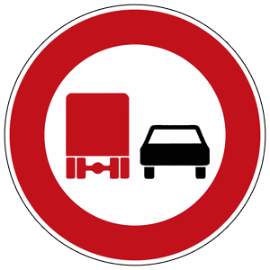

Zeichen 277
Überholverbot für Kraftfahrzeuge über 3,5 t

15 Tatbestände dazu
105618Sie überholten, obwohl Sie nicht übersehen konnten, dass während des gesamten Überholvorgangs jede Behinderung des Gegenverkehrs ausgeschlossen war. Sie missachteten dabei Überholverbotszeichen <276/277>.
150 €1 PunktA-Verstoß
105619
Sie überholten, obwohl Sie nicht übersehen konnten, dass während des gesamten Überholvorgangs jede Behinderung des Gegenverkehrs ausgeschlossen war. Sie missachteten dabei Überholverbotszeichen <276/277> und gefährdeten +) dadurch Andere.
250 €2 PunkteFahrverbot 1 Monat(e)A-Verstoß
105620
Sie überholten, obwohl Sie nicht übersehen konnten, dass während des gesamten Überholvorgangs jede Behinderung des Gegenverkehrs ausgeschlossen war. Sie missachteten dabei Überholverbotszeichen <276/277>. Es kam zum Unfall.
300 €2 PunkteFahrverbot 1 Monat(e)A-Verstoß
105621
Sie überholten mit einem <mehrspurigen Kraftfahrzeug/Kraftrad mit Beiwagen> ein ein- oder mehrspuriges Fahrzeug, obwohl Sie nicht übersehen konnten, dass während des gesamten Überholvorgangs jede Behinderung des Gegenverkehrs ausgeschlossen war. Sie missachteten dabei Überholverbotszeichen 277.1.
150 €1 PunktA-Verstoß
105622
Sie überholten mit einem <mehrspurigen Kraftfahrzeug/Kraftrad mit Beiwagen> ein ein- oder mehrspuriges Fahrzeug, obwohl Sie nicht übersehen konnten, dass während des gesamten Überholvorgangs jede Behinderung des Gegenverkehrs ausgeschlossen war. Sie missachteten dabei Überholverbotszeichen 277.1 und gefährdeten +) dadurch Andere.
250 €2 PunkteFahrverbot 1 Monat(e)A-Verstoß
105623
Sie überholten mit einem <mehrspurigen Kraftfahrzeug/Kraftrad mit Beiwagen> ein ein- oder mehrspuriges Fahrzeug, obwohl Sie nicht übersehen konnten, dass während des gesamten Überholvorgangs jede Behinderung des Gegenverkehrs ausgeschlossen war. Sie missachteten dabei Überholverbotszeichen 277.1. Es kam zum Unfall.
300 €2 PunkteFahrverbot 1 Monat(e)A-Verstoß
105624
Sie überholten bei unklarer Verkehrslage und missachteten dabei Überholverbotszeichen <276/277>.
150 €1 PunktA-Verstoß
105625
Sie überholten bei unklarer Verkehrslage, missachteten dabei Überholverbotszeichen <276/277> und gefährdeten +) dadurch Andere.
250 €2 PunkteFahrverbot 1 Monat(e)A-Verstoß
105626
Sie überholten bei unklarer Verkehrslage und missachteten dabei Überholverbotszeichen <276/277>. Es kam zum Unfall.
300 €2 PunkteFahrverbot 1 Monat(e)A-Verstoß
105627
Sie überholten mit einem <mehrspurigen Kraftfahrzeug/Kraftrad mit Beiwagen> bei unklarer Verkehrslage ein ein- oder mehrspuriges Fahrzeug und missachteten dabei Überholverbotszeichen 277.1.
150 €1 PunktA-Verstoß
105628
Sie überholten mit einem <mehrspurigen Kraftfahrzeug/Kraftrad mit Beiwagen> bei unklarer Verkehrslage ein ein- oder mehrspuriges Fahrzeug, missachteten dabei Überholverbotszeichen 277.1 und gefährdeten +) dadurch Andere
250 €2 PunkteFahrverbot 1 Monat(e)A-Verstoß
105629
Sie überholten mit einem <mehrspurigen Kraftfahrzeug/Kraftrad mit Beiwagen> bei unklarer Verkehrslage ein ein- oder mehrspuriges Fahrzeug und missachteten dabei Überholverbotszeichen 277.1. Es kam zum Unfall.
300 €2 PunkteFahrverbot 1 Monat(e)A-Verstoß
141627
Sie missachteten das Überholverbot, das durch Zeichen <276/277/277.1> angeordnet war.
70 €1 PunktA-Verstoß
141628
Sie missachteten das Überholverbot, das durch Zeichen <276/277/277.1> angeordnet war, und gefährdeten +) dadurch Andere.
85 €1 PunktA-Verstoß
141629
Sie missachteten das Überholverbot, das durch Zeichen <276/277/277.1> angeordnet war. Es kam zum Unfall.
105 €1 PunktA-Verstoß